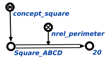

Команда вычисления периметра многоугольника предназначена для вычисления периметра многоугольника, поданного на вход данной команде. Аргуметом запроса является многоугольник, периметр которого необходимо вычислить. Результатом выполнения команды является вычисленный периметр многоугольника. Например:
